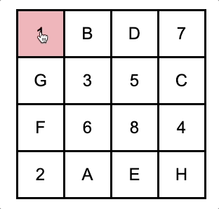

<html>
  <head>
    <title>Grid Trails task</title>
    <script src="jspsych-6.0.4/jspsych.js"></script>
    <script src="jspsych-6.0.4/plugins/jspsych-html-keyboard-response.js"></script>
    <script src="jspsych-6.0.4/plugins/jspsych-survey-text.js"></script>
    <script src="jspsych-6.0.4/plugins/jspsych-instructions.js"></script>
    <script src="jspsych-6.0.4/plugins/jspsych-fullscreen.js"></script>
    <script src="jspsych-6.0.4/plugins/jspsych-trails.js"></script>
    <script src="https://cdn.jsdelivr.net/npm/jstat@latest/dist/jstat.min.js"></script>
    <script src="https://ajax.googleapis.com/ajax/libs/jquery/1.11.1/jquery.min.js"></script>
    <link href="jspsych-6.0.4/css/jspsych_grid.css" rel="stylesheet" type="text/css" />
    <meta name="viewport" content="width=device-width, initial-scale=1, minimum-scale=1" />
  </head>
  <body></body>
  <script>
    /*
    This is a web-based trails A & B (executive functioning test), based on using a grid shape.
    It is modelled after the trails A & B test described in ***.
    This was added to the memory tests described in Oswald et al (2014) [https://link.springer.com/article/10.3758/s13428-014-0543-2].
    However, users can easily customize this test for their own purposes.
    Easily customizable variables have been listed below. For further changes to the test, knowledge of JavaScipt may be required.

    For smooth functioning of the test, make sure all the associated github files within the repository have been downloaded (especially the folder named 'jspsych-6.0.4').
    Results from this test will be automatically downloaded into the downloads folder of your desktop.

    For further details, please refer to the README.
    */

    //----- CUSTOMIZABLE VARIABLES -----------------------------------------
      repSet = 1 // number of times each set size should be repeated
      //randomize = true // present different set sizes in random order. if false, set sizes will be presented in ascending order
      file_name = null // file name for data file. if null, a default name consisting of the participant ID and a unique number is chosen.
      local = true // save the data file locally.
                  // If this test is being run online (e.g., on MTurk), true will cause the file to be downloaded to the participant's computer.
                  // If this test is on a server, and you wish to save the data file to that server, change this to false.
                  // If changed to false, ensure that the php file (its in the directory!) and the empty "data" folder has also been appropriately uploaded to the server.
                  // In case of problems, feel free to contact me :)

    //----------------------------------------------------------------------

    var gridSize = 4;
    var matrix = [];
    for (var i=0; i<gridSize; i++){
      m1 = i;
      for (var h=0; h<gridSize; h++){
        m2 = h;
        matrix.push([m1,m2])
      }
    };

    var n = 0 //keeps track of number of trials gone by

    var instructions = {
      type: 'instructions',
      pages: function(){
        pageOne = `
          <div class="responsive-text">
            <b>INSTRUCTIONS</b>
            <br><br><br>
            This is the Grid Trails task. <br><br>
            This task has two parts: <br>
            (1) numbers <br>
            (2) numbers & letters <br>
            <br><br>
          </div>
          `
        pageTwo = `
          <div class="responsive-text">
            We will first use NUMBERS.
            <br><br>
            You will see a grid of squares on the screen.<br>
            Each square will contain a number.<br>
            You will need to select each box in numerical order as quickly as possible (start at 1, then go to 2, then go to 3, and so on).<br><br>
            Below is an example of the grid with numbers. <br><br> 
            </img>
          </div>
          `
        pageThree = `
          <div class="responsive-text">
            When you select a number, it will turn red.<br>
            Your task is to select the squares in numerical order as quickly as possible without making errors. <br><br>
            Click on the square to select the appropriate squares. <br>
            You will be stopped if you make an error and allowed to try a new box. <br><br>
          </div>
          `
        pageFour = `
          <div class="responsive-text">
            Remember, it is important to move as quickly and accurately as possible.<br>
            Press "Next" to start the trial.<br><br>
          </div>`
        return [pageOne, pageTwo, pageThree, pageFour]
      },
      allow_backward: false,
      button_label_next: "Next",
      show_clickable_nav: true
    }

    var instructions2 = {
      type: 'instructions',
      pages: function(){
        pageOne = `
          <div class="responsive-text">
            We will now use NUMBERS and LETTERS.<br><br>
            You will see the same grid of squares on the screen.<br>
            This time, each square will contain either a number or a letter.<br>
          </div>
          `
        pageTwo = `
        <div class="responsive-text">
          You will select each box alternating in order between the numbers and letters (Start at 1, then go to the first letter A, then go to the next number 2, and then the next letter B, and so on). <br><br>
          Below is an example of the grid with numbers and letters. <br> 
          </img>
        </div>
        `
        pageThree = `
          <div class="responsive-text">
            When you select a square, it will turn red.<br>
            Your task is to select the squares alternating in order of numbers and letter as quickly as possible without making errors. <br><br>
            Click on the square to select the appropriate squares. <br>
            You will be stopped if you make an error and allowed to try a new box. <br><br>
          </div>
          `
        pageFour = `
          <div class="responsive-text">
            Remember, it is important to move as quickly and accurately as possible.<br>
            Press "Next" to start the trial.<br><br>
            </div>
            `
        return [pageOne, pageTwo, pageThree, pageFour]
      },
      allow_backward: false,
      button_label_next: "Next",
      show_clickable_nav: true
    }

    let rtSeconds;
    const correctOrderA = Array.from({length: 16}, (_, i) => i + 1);
    var test_stimuli_A = {
      type: 'trails',
      grid_size: function(){
        return gridSize
      },
      correct_order: () => correctOrderA,
      random_order: () => jsPsych.randomization.sampleWithoutReplacement(correctOrderA, correctOrderA.length),
      trails_type: () => "A",
      on_finish: function(){
        const [trial_data] = jsPsych.data.get().last(1).values();
        const { rt } = trial_data;
        const rawRtSeconds = rt/1000;
        rtSeconds = Math.round(rawRtSeconds*100)/100;
        
        n+=1
      }
    }

    const correctOrderB = Array.from({length: 16}, (_, i) => {
      const halfIndex = Math.floor(i/2);
      return i % 2 ? String.fromCharCode(halfIndex+65) : halfIndex + 1 
      })

    var test_stimuli_B = {
      type: 'trails',
      grid_size: function(){
        return gridSize
      },
      correct_order: () => correctOrderB,
      random_order: () => jsPsych.randomization.sampleWithoutReplacement(correctOrderB, correctOrderB.length),
      trails_type: () => "B",
      on_finish: function(){
        const [trial_data] = jsPsych.data.get().last(1).values();
        const { rt } = trial_data;
        const rawRtSeconds = rt/1000;
        rtSeconds = Math.round(rawRtSeconds*100)/100;
        
        n+=1
      }
    }

    var feedback = {
      type: 'instructions',
      pages: function(){
        pageOne = `<div class="responsive-text">
          <b>You took ${rtSeconds} seconds to complete the task.</b>
          <br><br>`
        return [pageOne]
      },
      allow_backward: false,
      button_label_next: "Next Trial",
      show_clickable_nav: true,
      on_finish: function(){
        nSymmetryAcc = 0
      }
    }


    var conclusion = {
      type: 'html-keyboard-response',
      stimulus: function(){
        return `<div class="responsive-text">
          This task is over.<br><br>
          Thank you for your participation in this task. <br><br>
          </div>
          `
      },
      choices: jsPsych.NO_KEYS
    }

    var p_details = {
      type:"survey-text",
      questions: [{prompt: "Enter subject number"}],
      on_finish:function(){
        partN = jsPsych.data.get().last(1).values()[0].partNum
        partN = partN.replace(/['"]+/g,'')
      }
    }

    function saveData(filename, filedata){
      $.ajax({
        type:'post',
        cache: false,
        url: 'save_data.php', // this is the path to the above PHP script
        data: {filename: filename, filedata: filedata}
      });
    };

    var IDsub = Date.now()
    var dataLog = {
      type: 'html-keyboard-response',
      stimulus: " ",
      trial_duration: 100,
      on_finish: function(data) {
        var data = jsPsych.data.get().filter([{trial_type:'trails'}]);
        if (file_name == null){
          file_name = "Grid_trails_AB_"+partN+"_"+IDsub.toString()+".csv"}
        else{
          file_name += ".csv"
        }
        if (local){
          data.localSave('csv', file_name )
        } else {
          saveData(file_name, data.csv());
        }
      }
    }

    var trailsA_Test = {
      timeline: [test_stimuli_A, feedback],
      repetitions: repSet
    }

    var trailsB_Test = {
      timeline: [test_stimuli_B, feedback],
      repetitions: repSet
    }

    timeline = [p_details]
    timeline.push({
      type: 'fullscreen',
      fullscreen_mode: true
    });
    timeline = timeline.concat([instructions, trailsA_Test,instructions2, trailsB_Test])
    timeline.push({
      type: 'fullscreen',
      fullscreen_mode: false
    });
    timeline.push(dataLog)
    timeline.push(conclusion)

    jsPsych.init({
      timeline: timeline,
      on_finish: function() {
        jsPsych.data.displayData(); // comment out if you do not want to display results at the end of task
      }
    });
  </script>
</html>